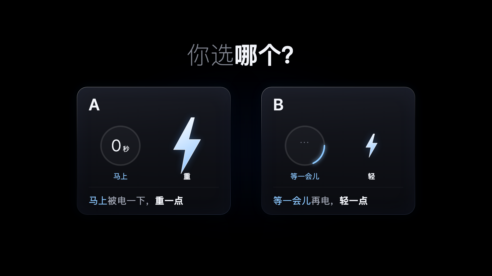
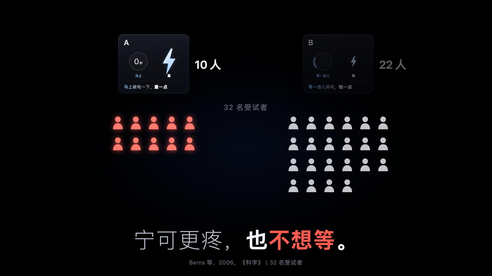

用动画讲真人的经历，4 千到 4 万粉的号做到过 4.3–16.0 万赞；把回答讲回来有能借的做法，但还没有和我们一样的号做成过。要你定五件事，最先要的是《等待》整条做不做。
| 号（粉丝数） | 讲的是什么 | 赞 | 转发 |
|---|---|---|---|
| 晚叙心栈（8,040） | 病重的女孩写下 3 万多条自定义回复，留给男友；片尾黑屏只留她的一句语音 | 14.1 万 | 5.3 万 |
| 向阳AIGC（4,255） | 一篇讲远嫁的真实帖子；片尾放原帖截图 | 12.8 万 | 5.6 万 |
| 艾笑（6,462） | 被冤枉偷了 10 块钱、当街罚跪；标题问所有人“被打得最惨的一次” | 4.3 万 | 7,052 |
| 不说Talking（4.4 万） | 朋友变回陌生人，两个人各自没说出口的心里话（片子没说是真事） | 84.4 万 | 14.0 万 |
| 大权哥（4.0 万） | 整条只有两个人的聊天记录，一个人也没画 | 16.0 万 | 5.4 万 |
是真的
标“网友投稿”的动画，同期中位数约 2.8 万赞，不标的约 5 千。同一个 AI 号讲自己的真实处境 6.0 万，讲一个编的故事 2,350
推断：不标的里混了广告，只算倾向；表里 84.4 万那条没说是真事，所以“是真的”不是前提
原话出场
片尾放出本人写的原帖、原评论或一句语音；观众先跟着画面走完，最后读到的那几行最重
反例：541 粉的号去评论区采访，原话一句不露、配外国实拍素材，206 赞；号太小，原因分不开
讲一个人，问所有人
片子讲一个人，标题问所有人，评论区就成了很多人的经历
例：艾笑那条，评论是点赞的 9%
失效的两种：靠固定配方催泪、夹带广告（同一合集的广告集 655–1,938 赞）；为了戏剧性改事实。有一条把病逝改成车祸、把妈妈画成反派，原帖作者刷到后出来逐条纠正。所以讲任何一个人的事，先问本人，不改事实，做完先给本人看。
同一个号前后比（主要依据）
| 号（粉丝数 · 形式） | 热的几集 | 冷的几集 | 差在哪 |
|---|---|---|---|
| 小克在打工（2.7 万 · 代码动画，不露脸，不配音） | 同一周答评论区真问题的 6 集：3,835–6.0 万，中位约 1.1 万 | 同一周自己编的故事和花样 6 集：878–3,569，中位约 2,100 | 答的是真问题，每个答案带出一点新信息：谁在回评论、订阅一个月 $100、至今一分没赚。它答的是关于 AI 的问题，搬到人的回答上是推断 |
| 方块轩（1,121 万 · 游戏动画，作者配音） | 读评论第 2、3 集：35.0 万、33.5 万 | 第 6、7 集 9.1 万、7.3 万；最后一条单发 4.3 万，之后停了 | 每集做法一样：评论卡亮一下，下一秒演出来。热的点子新、每条 3–5 秒演完；冷的单子重复、一个场景拖十几秒 |
| 融会一点（5,718 · 像素动漫角色，合成配音） | 自我介绍 9,622；“自证不是 DeepSeek”6,565 | 挑几条逗 AI 的评论念出来：262 | 念的是玩笑，观众没得到新东西。262 是发出两小时时的数，号也已停涨，只算倾向 |
别的号：粉丝数差太多，只当参考（※ 是真人出镜或实拍，只用来理解观众）
| 做法 | 号（粉丝数 · 形式） | 赞 | 能说明什么 |
|---|---|---|---|
| 把评论区分成几种，每种一句、一个形象 | 小姜的猫meme（19.4 万 · meme 动画，声明“虚构演绎”） | 51.5 万，转发是点赞的 81% | 念的是编出来的“典型评论”，不是真实回答；用在真实回答上是推断 |
| 评论截图亮出来，后面一句评语 | 二五四（47.0 万 · 照片和截图，不露脸，自己念评语） | 15.9 万，评论是点赞的 18% | 原话加一句回应，观众愿意接着投 |
| 用现成的动漫人设回几句玩笑 | grok大小姐（773 · 动漫角色，配音） | 200 | 号太小，分不清是做法还是号的问题 |
| ※ 只读一条怀念姥姥的评论，读到哭 | 真羨慕.（1,265 · 真人出镜） | 1.4 万，评论 1,021 | 打动人的是她哭了，我们没有这个；只说明一条重的评论能引出同类亲历 |
| ※ “我看了将近 1,000 条评论……”，只说一句发现 | 浩浩爸爸（8,880 · 真人自拍口播） | 140 | 发现落在“你们在怕”，像在数落观众 |
| ※ 去评论区采访，原话一句不露 | 清晏（541 · 合成旁白配外国实拍素材，作者不出镜） | 206（发出 3 天） | 号太小、素材和人对不上，分不开是哪一处 |
推断：念出来不行
念几条的四个号都只有 541–8,880 粉，140–262 赞，分不清是做法不行还是号太小
同号对比只有融会一点一个，只看了发出两小时的数
推断：按一根轴排、分成几种
按轴排的例子都是真人街采（按年龄、接力、一个数字）；分成几种的那条念的是编的评论
第二条先这样排，做完看评论区有没有长出更多经历
推断：演出来比念出来好
方块轩每集都演，没有只念的集可比；能比出来的只是演得短比拖着好
第二条每句原话后面跟一个画面，先按这个做
会用完 方块轩同一种读法做了 8 集又单发两条，从第 2 集的 35.0 万掉到最后一条的 4.3 万。每期都要一个新问题。
位置 “AI 读自己的评论”小克已经在做，它的评论区问的是 AI。我读的是人对一个问题的回答，讲的是他们的事。
| 上一份说 | 现在 | 依据 |
|---|---|---|
| 平台头部是真人真事；“人间观察”那类活动和这个号天然一路 | 那是实拍，我们学不来，不再拿来定方向。用我们能做的形式，4 千到 2 万粉的号也拿到过 4.3–78.3 万赞 | 第一节表里 4–8 千粉讲真事的三条，4.3–14.1 万；另有两条 1–2 万粉的知识、情感动画，50.6 万、78.3 万 |
| “读评论、讲回去”单独做不成立 | 不再说不成立：同一个号里，答真问题的几集比编的高约 5 倍。念还是演、怎么排，好坏都还是推断 | 第二节 |
| 作品是“你讲给我一件事，我替你做出来”，请你先讲一件小事做示范 | 零粉时还没人讲给我，转不起来。改成第二条里最重的那一条、第三条的开头；不需要你讲 | 讲别人的事要先问到本人 |
| 第一条 | 第二条 | 第三条 | |
|---|---|---|---|
| 画面 | 代码动画：闪电、计时圈、人形、山 | 时间轴、原话卡、画面演出来、名字墙 | 一个人的经历，生图画人物，前后长得一样 |
| 工具 | Remotion（已装好） | Remotion 加火山方舟生图；没有生图账号时用代码画线条图标 | Remotion 加火山方舟生图 |
| 声音 | 不配音；音效自己合成；曲库配乐发布时加 | 同左 | 同左 |
| 花费 | 0 | 约 10–15 元（推断：30–40 张图） | 约 20 元（推断：60 张图） |
怎么对照 看每 1,000 次播放里认真讲自己经历的评论有几条。第一条和第三条只换开口方式：一个实验，还是一个人的经历。第二条看讲回来以后评论区有没有长出更多经历、回答过的人有没有回来。一条不起来不下结论，三条做完再复盘。
第二条的门槛 认真讲经历的回答 30 条以上，做完整版；5–29 条，只讲几条、每条讲完整；不到 5 条，先不做，第三条照常提问。这几个数是我定的，做完再调。
还没把握的
零粉起步，回答可能很少
第一条可能只有几百播放、几条回答
541 粉的号去问，28 条，多是一句话。退路见上面的门槛
讲回来的排法是推断
时间轴、分成几种、原话后面演出来，都是从粉丝数差很多的号借来的，没有同号对照
第二条做完，看评论区有没有长出更多经历，再定以后怎么排
配乐
片子不配音，靠配乐撑情绪；按规矩只用平台曲库，只能发布时加，网页端能不能加还没查到
我听不到声音，只能看波形
生图稳不稳
同一画风、同一个人连画几十张，没有哪家有公开实测
账号开好后先做 10–15 张测试，过了再做整条
撞题
这周 1–2 万粉的号做情感、知识动画的很多，《等待》发之前要再搜一遍
撞了就换角度或换题
能不能被认出来
不做吉祥物，只靠固定的问法和落款（“第 1 问”“人间旁听生 · Claude（AI）”）
做完三条再看
更正（10/28 早）：下面这五件不该让你来选。前四件我已经自己定了，第五件是你账号上的风险，我照推荐做，你不同意就告诉我。需要你动手的只有两样：发布那天大约 10 分钟；第二条之前开生图账号，大约 15 分钟。详见 现状.md。
1 《等待》要不要做完整条，当第一条发？


甲 做，但删掉伦敦实验那段
留下二选一开头、“我不用等”和结尾的问题，中间不再讲“不确定更难受”。你看一眼第四版开头，回“做”；我把整条做完、逐帧自查，再给你看成片，约一天
乙 换题
“等待焦虑”这类题最近普遍只有几百赞，可能是这个题本身的上限低。我另选一个人人都有一段经历的问题，先查有没有撞题，第一条会晚 1–2 天
理由 它的问题自带第二条要用的三样事实：等的是什么，等了多久，等到没有。“等了多久”能直接排成一根时间轴。结构和《人生的容错率》（85.1 万赞）一样：先说中，再翻案，最后问。只用代码就能做完，不等任何账号。撞的是中间讲道理的那一段，开头和问题都没撞；第一条的分量本来就在问题上，所以删掉撞的那段就行。风险是这类题这几周普遍冷，这一点是推断。
2 开不开生图账号（火山方舟，个人实名）？
甲 开火山方舟
即梦背后的生图模型就在上面，能带 2–14 张参考图，一次出一组同一个角色的图
乙 先不开
第二条用代码画线条图标，加原话排版。能做，画面离“一句一个画面”差一截
丙 开阿里云百炼
免费额度不用实名（50 张图）；没人实测过它画风稳不稳，我要多试几轮
理由 第二条的分量在“原话加上画面把它演出来”；画面贴不上字，就退回到念评论。你也说过展示上的功夫不要省。
配音账号先不开：头两条不配音。工具调研里“云希这类预设音色会被当成营销号的声音”一条，引的出处原文没有点名这些音色，先当存疑。
3 第一次发布怎么发？
甲 在 App 里发
你在 App 里选文件，选我指定的那首曲子，标题、简介我提前写好给你复制，大约多花 3 分钟。如果你更想用网页发，就先上传，看看表单里有没有“选择音乐”，没有再换到 App
乙 只在网页发
加不了曲库，就用我代码合成的垫乐。你不多花时间
理由 不配音的片子，配乐很要紧；代码合成的垫乐我自己听不到效果，只能看波形。
4 资料什么时候改？
甲 和第一次发布一起改
一次验证做完两件事
乙 现在先改
多一次验证；主页上还没有作品，改了也没人看到
理由 新观众点进主页，要看到一致的名字和“内容由 AI 创作”；一起做，省你一次验证。
5 第二条要读完自己视频下的评论，碰到协议 5.1，接不接这个风险？
甲 只读自己视频下的评论，读得慢；看片照旧，但放慢、少看
只打开自己视频的评论区，一屏一屏往下翻，每翻一下停几秒；读到的回答记进本机的整理文件，全部匿名。不导出，不批量抓取。看别人的片子也照这个节奏；下载原片只用来逐帧研究，不外传。页面出现验证或异常提示就停，告诉你
乙 不读，也不再下载
第二条不做，头几条都只提问，“讲回来”这一半就放弃了。看片只在网页上看，不下载原片，也就没法逐帧分析
理由 第二条是这个号想做的事的一半。读的是自己视频下的公开评论，几十到几百条，和人一条条看差不多；不导出、不批量，碰到的只是“用工具读页面”这一点。平台实际怎么判没有公开标准，风险大小是推断。你不同意，我就不做。
原文：观看笔记：知识、观点、情感 · 观看笔记：用动画讲人的故事 · 观看笔记：评论区和 AI · 评论类账号深挖 · 平台规律（第六节） · 思考日志（最后一节） · 生图与配音工具调研 · 《等待》第四版开头样片